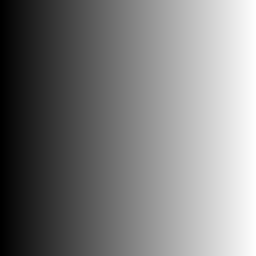
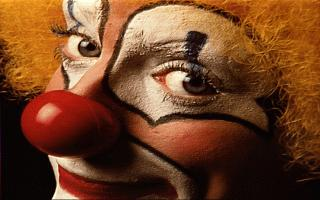
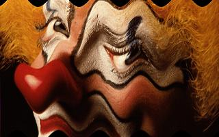
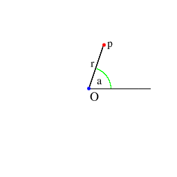
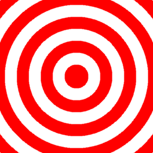
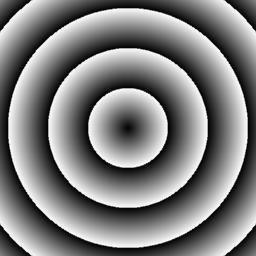
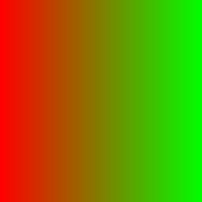
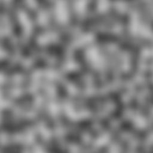

The MathMap Language Tutorial
MathMap is a language for transforming existing
images and producing entirely new images. Think of it as the ultimate
image and animation filter. This flexibility, however, comes at a
price: Using MathMap to create a new transformation isn't as simple as
using some pre-built image manipulation filter. Instead, you have to
precisely describe what MathMap should do. This usually requires a
bit of math knowledge (for most tasks, high-school math is more than
sufficient) and it is necessary to know the MathMap language.
This document is a gentle introduction to the
MathMap language. Very little mathematical knowledge is assumed, and
almost no programming skills are needed--although they certainly would
come in handy.
Please take the time to read through this introduction. Try out
the examples we give and play around with them. Change them a little
and see what happens. That way, you will quickly gain a feeling for
what you can achieve with MathMap and in which ways. If you do this,
we are confident that you will soon create your own image filters and
maybe even get hooked on MathMap.
This tutorial deals with the following topics:
Basic Principles
The Cartesian Coordinate System
Input Images
The Polar Coordinate System
Conditionals
Variables
User Values
Animations
Basic Principles
The basic operating principle of MathMap is very
simple. To create an image of a given size, MathMap simply iterates
through all the elements (pixels) of the image to be created and
"asks" your expression how the pixel in question should look like,
i.e. what color it should have.
Let's make an expression that produces a white image:
grayColor(1)
grayColor is a function producing a gray level color.
What it needs to know is the gray level you want to produce. In this
case, the gray level we want is 1 which is for
white. 0 is black, and 0.5 is halfway between. If
you provide a value greater than 1, 1
will be used instead (there is no color whiter than white!).
Similarly, 0 will be used if a value less than 0 is
presented to the function.
Such values given to functions are called arguments. As
we have just seen, grayColor takes exactly one
argument. Arguments are always given to a function after its name,
enclosed in parenthesis. As we will shortly see, if a function takes
more than one argument, these arguments are separated by commata.
Producing gray levels is fun, but we'd like to play around with
"real" colors, too. So, let's produce a red image:
rgbColor(1,0,0)
As you can see, rgbColor takes three arguments and
produces a color. It's first argument is the amount of red in the
color. The second argument is the color's green component, and the
third argument specifies the blue component. Again, useful values
range from 0 to 1. Values too large
or too small are clipped to 1 or 0, respectively.
Try to change the values and see how it affects the output color.
The Cartesian Coordinate System
So far, the pixels in our images always had the same color. When
we produce images with multiple colors, we usually want to determine
the color based on the position of the pixel in question.
MathMap allows access to the coordinates of the pixel being
calculated. It supports two coordinate systems. The first one, which
you are certainly familiar with, is the cartesian coordinate system.
Each pixel has two coordinates, called x and
y. The following figure illustrates the cartesian coordinate
system:

The point labeled "O" is the origin of the coordinate
system. Both its coordinates (x and y) are zero.
The origin is always in the center of the image. The point "p" in the
illustration has a value of 50 for the coordinate x
and 20 for y. That's because it's
50 pixels to the right of the origin and 20 pixels
above. As you can see, x increases by one as you go one
pixel to the right, while y increases by one if you go one
pixel up. Similarly, they decrease when going in the opposite
directions. That means that pixels to the left of the origin have
negative x coordinates and pixels below it have negative
y coordinates.
Let's use this knowledge to produce an image which is black on the
left, white on the right and has gray levels in between. We want to
produce this image:

For the creation of this image, it helps to know that the constant
W contains the width of the image to be created.
We know that we can use grayColor to
produce a gray level. However, we need a number between 0
and 1 to get colors between black and white.
Let's look at what we have. At the right edge of the image the value
of x is half the width of the image (since the
origin is always at the center), i.e. W/2. Similarly, at the
left edge, it has the same absolute value, only it's negative,
i.e. -W/2. In order to get 0 (for
black) for the left edge, we can simply add W/2 to
x. That gives us x+W/2 which is 0 at the
left edge of the image. At the right edge, however, its value is
W, instead of 1. We can solve this problem by
simply dividing our expression by W, giving
(x+W/2)/W. Now we have what we want, and we can give this
expression as an argument to grayColor:
grayColor((x+W/2)/W)
Try to do the same for the y coordinate, i.e. make a
gradient from bottom to top instead of from left to right. You might
need to know that the constant H holds the
height of the image. You could also try to combine both coordinates
to produce a gradient which goes from the bottom left corner to the
top right corner.
Input Images
While it's fun to produce completely new images, it is often nice
or necessary to modify existing ones. We will use this image as our
input image:

The function origValXY looks up a pixel in
the input image given its cartesian coordinates and returns its color.
Hence, the expression
origValXY(x,y)
simply copies the input image, which is not very exciting. A very
simple effect is to flip the image horizontally. This can be achieved
by changing the sign of the x coordinate,
i.e. making negative coordinates positive and vice versa:
origValXY(-x,y)
Try it out for yourself. Also, try to predict what would happen if
you changed the sign of the y coordinate instead, then try it
out and see if you were right.
Now, let's shake the waves with our image. The function
sin will come in handy for our purposes. This is what its
graph looks like (by the way, this graph was produced by a MathMap,
using an expression by Hans Lundmark):

As you can see, the value of sin oscillates
between -1 and 1. The length of its oscillation
period (the distance it needs to make a whole "cycle") is
2*pi. The value of pi, as is well known, is about
3.14159.
We will now try to shift whole pixel columns up and down, depending
on their x coordinates. The shift pattern will resemble the
graph of the sin function, only that we will
use a period of 60 pixels, and we will shift at most 10
pixels up or down:
origValXY(x,y+10*sin(x*(2*pi)/60))
The resulting image looks like this:

The Polar Coordinate System
In addition to the familiar cartesian coordinate system, MathMap
provides the polar coordinate system. Each pixel has two polar
coordinates, namely r and a. The
following illustration helps in understanding the polar coordinate
system:

The value of r is simply the distance from the origin
(i.e. the center of the image) to that pixel.
The value of a is the angle between the positive x-axis
and the line from the origin to the point in question.
However, the angle is not measured in degrees
(0-360), but in radians, which range from 0
to 2*pi. This may seem a bit awkward, but it is more
convenient mathematically. However, MathMap provides two functions to
convert between radians and degrees, namely rad2deg and
deg2rad.
Polar coordinates make it very easy to generate pond-like effects.
When we try the wavy expression from above and use polar instead of
cartesian coordinates, leaving the a
coordinate unchanged and shifting the r
coordinate, we get the following expression:
origValRA(r+10*sin(r*(2*pi)/60),a)
which generates this image:
Conditionals
Let's create an image which looks like a target:

Obviously, whether a pixel is red or white depends solely on its
distance from the center, which we know is available as r. I
have chosen the width of each ring as 20, i.e. the distance
between the radii of the inner circles of two neighboring red (or
white) rings is 40. Hence, the expression we
are looking for is periodic with a period of 40.
To solve this problem, we will use the modulo operator, which is
available as %. Its value is the remainder of the division
of its left operand by its right operand. As an example, 7%3
is 1 because the remainder of the division of
7 by 3 is 1.
This operation is periodic. Its period is the value of its right
operand (the divisor). Furthermore, the result of the operation is
never greater than the right operand. So, for example, r%40
is periodic with a period of 40 and is always
between 0 (inclusive) and 40 (exclusive). Let's see
what this looks like:
grayColor((r%40)/40)
In order to be nice to grayColor, the value
is scaled to be in the range from 0 to 1 (instead of
40). The resulting image looks like this:

You can see that the value starts out as 0 at the center
of the image, climbs to 1 at 40 pixels from the
center and then immediately drops to 0 again, repeating this
cycle forever (well, in our case, to the boundaries of the image).
You may want to try to leave out the rescaling "/40" to
see the difference.
All we have to do now is to check whether we are in the first half
of a period (in which case r%40 is less than 20), or
in the second. If we are in the first, the color for the pixel is
red, otherwise it is white. MathMap provides a construct for such
decisions:
if r%40 < 20 then
rgbColor(1,0,0)
else
rgbColor(1,1,1)
end
The indentation is used merely to make the expression easier to
read. You can indent your code any way you like (or not at all).
The expression should be easy enough to understand. If the
condition is fulfilled, the result is the color red, otherwise it is
the color white.
Variables
Sometimes you want to use one value in multiple places in your
expression. It's not necessary to write that value twice. Instead
you give it a name by which you can refer to it. Let's say we want to
produce an image like this:
As you can see, the pixels from the original image fade to black
with the distance from the center. They reach the black color at the
top and bottom edges of the image.
The variable r which holds the distance from the center of
the image is measured in pixels, so its value at the centers of the
top and bottom edges is half the height of the image,
i.e. H/2. If we scale this down to 1, it's much
easier to work with, so we'll use r/(H/2). This expression's
value is 0 at the center of the image and increases with the
distance from the center. It reaches 1
exactly where we want the color to be solid black. However, at
greater distances from the center it grows larger than 1,
which we don't want, so we limit it with the function min.
This function takes two arguments and returns the smaller of the two.
Hence, min(r/(H/2),1) never exceeds
1. (There's also a function max,
which returns the larger of its two arguments.)
Given the color of a pixel in the original image and its
transformed (as above) distance from the center, we can now figure out
what to do. If the transformed distance is 0
(in the center) we want the original color unchanged. If it's
1, we want the color black. We can reach that effect by
multiplying the three color components of the pixel by 1
minus the transformed distance, i.e. 1-min(r/(H/2),1).
We can use the functions red,
green, and blue to access the
components of a color. Now we could write the red component of our
output image as red(origValXY(x,y))*(1-min(r/(H/2),1)). We'd
have to use equivalent expressions for the green and blue components
and then use them as arguments to rgbColor. By assigning the
values origValXY(x,y) and 1-min(r/(H/2),1) to
variables, which we call p and d (you
can choose any name you like, as long as it's not the name of a
built-in constant or variable or a keyword; consult the MathMap reference for the names of all
those), we can write the resulting expression as
rgbColor(red(p)*d,green(p)*d,blue(p)*d). The complete
expression is:
p=origValXY(x,y);
d=1-min(r/(H/2),1);
rgbColor(red(p)*d,green(p)*d,blue(p)*d)
As you can see, assigning values to variables is very
straightforward. You must separate variable assignments and other
expressions with semicola.
By the way: Using more advanced features of MathMap you can write
an expression equivalent to the above as
lerp(r/Y,origVal(xy),grayColor(0))
So, please go on reading, there's more to come.
User Values
Sometimes you need to put some values into your expression which
are more or less arbitrary. Often you want to try out several
different values, and it's tedious to change the expression every time
by hand. That's where user values come in. Let's reiterate our wave
example:
origValXY(x,y+10*sin(x*(2*pi)/60))
There are two parameters here which we have chosen more or less
arbitrarily, namely the amplitude of the wave (in this case
10) and the wave length (in this cas 60). Wouldn't
it be nice if we could change these values with sliders instead of
having to edit the expression?
That's exactly what user_slider provides.
It generates a user interface element (a slider) and hands the chosen
value to the expression:
amp=user_slider("Amplitude",0,100);
len=user_slider("Wavelength",1,200);
origValXY(x,y+amp*sin(x*(2*pi)/len))
user_slider takes three arguments: the name of the slider
(for identification purposes in the user interface), the minimum and
the maximum values. Try it out!
There are not only user value functions for numbers, but also for
colors, color gradients, curves and even images. Image user values
make it possible to have more than one input image in an expression.
Check out the Reference Manual for
details.
Tuples and Tags
Now it's time to look at a more technical subject, namely MathMap's
type system. The type system of MathMap is designed to be as
invisible as possible, but in order to unleash MathMap's full
potential, you will need to know one or two things about it. Don't
worry, it's not very complicated.
Sometimes it's convenient to treat two or more numbers as a single
value. One such example is colors. A single color is actually four
distinct numbers. We have already come across three of them, namely
the red, green, and blue components. The fourth is the color's
transparency value, called alpha. A color with an alpha of
1 is completely opaque, like all the colors we have seen so
far. An alpha component of 0 means full
transparency, 0.5 means half transparent, and
so on.
So far, we have always treated colors as single values. We have
constructed colors using functions such as rgbColor and
retrieved its components with functions like red. We can,
however, do these things without using those functions. This, for
example, is the half-transparent color green:
rgba:[0,1,0,0.5]
One or more numbers within square brackets, separated by commata,
constitute a tuple. So, tuples are just ordered collections
of numbers. They are ordered because MathMap remembers in which order
you have written their components. For example, the tuple
[1,2,3] is not the same as [3,2,1].
The name rgba is a tag. The tag rgba
tells MathMap that that tuple is not just four numbers, but a color
with red, green, blue and alpha components. This begs the question
whether there are other kinds of colors. Actually, there are.
MathMap also supports colors in the so-called HSV color space. Those
colors are given the tag hsva. MathMap uses the tags to
determine how to interpret the numbers in the tuples.
Many operators and functions work on tuples as well as on single
numbers. The functions min and max for example,
calculate the minimum and maximum values for each tuple element. To
set the red component of an image to 0, for example, you can
use the following expression:
max(origValXY(x,y),rgba:[0,1,1,1])
Animations
MathMap provides the functionality to create animations. To that
end, the language provides a variable called t. For each
single picture in the animation (such pictures are called
frames) t has a different value, depending on the
position of the frame within the whole animation. The first picture
in the image always has t set to 0,
while for the last picture it is set to 1. Actually, the
latter statement isn't always true, as we will discover shortly, but
for the time being, simply assume that it is.
The following expression produces an animation which fades from
black to white:
grayColor(t)
You will often want to produce animations which loop seemlessly,
i.e. which looks like one endless animation when looped. For such
animations, make it so that the image with a t
value of 1 looks exactly like the one with a value of
0, like in the following expression:
grayColor(sin((t*2*pi+1)/2))
The problem here is that if MathMap would render the first image in
the animation with t as 0 and the
last image with t as 1, you would
have the same frame twice when looping. Therefore, MathMap lets you
choose (in the user interface) whether you would like to create a
periodic (looping) animation or not. If you do, t never
reaches 1 at the end of the animation but stops shortly
before, depending on how many frames you want your animation to have.
For example, for a periodic animation with 9
frames, t takes on the values 0, 0.1,
0.2, ... 0.9.
Hint: One way to make periodic animations is to use periodic
functions like sin, cos or the modulo
operator %.
Some Useful Functions
Here is an overview of some MathMap functions which are very useful
in many situations. This is not a complete function reference. If
you are looking for one, you'll find it in the Reference Manual.
scale
Quite often you find that you have a value which varies within a
given range, but you want the range to be different. Take, for
example the gray gradient:
The variable x varies from -W/2 to W/2
but you want it to be between 0 and 1. In such
cases you can use the scale function. The
expression scale(x,-W/2,W/2,0,1) is 0
when x is -W/2 and 1 when
x is W/2. Hence, you can create the
above image with the expression
grayColor(scale(x,-W/2,W/2,0,1))
lerp
Suppose we want to produce a gradient from red to green:

We know from above that we can use scale(x,-W/2,W/2,0,1)
for a value which is 0 at the left image edge
and 1 at the right edge. lerp does
the rest: it takes two tuples and produces a value which is "in
between" these two values by the same amount as its first argument is
in between 0 and 1. Hence, the gradient above can
be produced by this expression:
lerp(scale(x,-W/2,W/2,0,1),rgbColor(1,0,0),rgbColor(0,1,0))
inintv
The function inintv makes it easy to check whether a value
lies within a given range. inintv has a value
of 1 if the condition is fulfilled, and of 0
otherwise. You can use this as a condition if in if
expression, or as a value in its own right. For example, this
expression draws a white ring with an inner radius of 50 and
an outer radius of 60:
grayColor(inintv(r,50,60))
clamp
Sometimes you have values which you want to lie within a given
range. In case they don't, you simply want them to take on the
largest value within the range, if they are too large, or the smallest
if they are too small.
MathMap often does such operations authomatically, for example if
you produce colors with components larger than 1 or smaller
than 0.
If you have to it yourself, clamp can help you. For
example, clamp(v,[0,0,0],[1,1,1]) restricts every element of
v to be in the range from 0 to 1.
rand
The function rand generates a random number. It takes two
arguments: The minimum and the maximum value of the number to be
generated. This expression, for examples, randomly scatters the
pixels of the input image (but not more than 10 pixels away from their
original location in both directions):
origValXY(x+rand(-10,10),y+rand(-10,10))
noise
In image manipulation, one often needs a functions which is random
but doesn't change as abruptly as rand does. noise
is a so-called solid noise function. It takes a tuple of
three numbers and returns a value between -1 and 1.
If the input arguments change only by a little, so does the resulting
value. The overall "look" of the function is random, though. It's
hard to describe, so it's best you see for yourself:
grayColor(scale(noise([x/20,y/20,t*2]),-1,1,0,1))
As you can see, the third input value depends on t, so try
out changing t. For t being 0, the
resulting image looks like this:

Further Information
This tutorial has, despite its length, not covered all features and
details of MathMap. For example, we didn't even mention loops (a
programming language feature having nothing to do with animations).
To get more detailed information about the MathMap language, see
the MathMap Reference Manual.
A very good way to learn how to do things with MathMap is to look
at the examples supplied with it. Pick the examples you find
interesting, look at their expressions, and try to figure out how they
work.
You might also want to look at the MathMap Homepage
for announcements, new documentation or interesting links.
If you like MathMap, or if you have suggestions or questions
regarding the MathMap language or user interface, feel free to contact the author. I
am looking forward to your feedback.